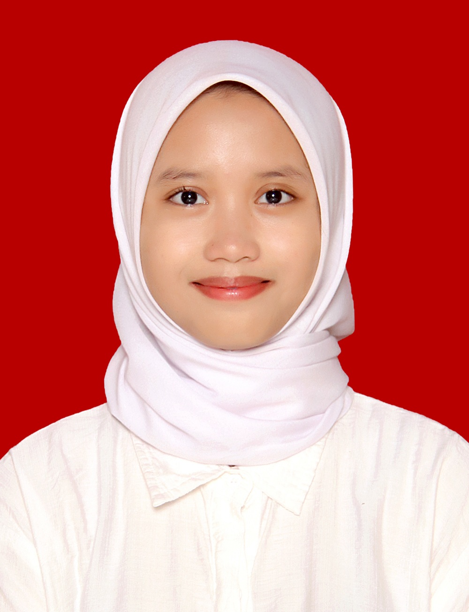

|  |
AURELLIA LATHIFAH KHAIRUNNISAAlamat : Jalan Sigura-gura III No.12, Kota Malang Email : lkaurellia@gmail.com No. Telepon : 081284162006 |
Mahasiswa Sistem Informasi dengan semangat tinggi untuk belajar dan berkembang di bidang teknologi. Memiliki minat yang kuat untuk mengeksplorasi inovasi dan manajemen produk. Aktif terlibat dalam organisasi kampus yang mendukung pengembangan soft skills dan kepemimpinan. Antusias untuk terus mengembangkan pengetahuan akademis dengan melibatkan pengalaman praktis.
| S1 Sistem Informasi Universitas Brawijaya |
(Agustus 2024 - Sekarang) |
| Jurusan IPA SMAS IT As-Syifa Boarding School |
(Juli 2021 - Juni 2024) |
| Staf Muda BEM FILKOM 2024 Kementrian Sosial dan Lingkungan |
(Oktober 2024 - Desember 2024) |
|
|
| Farewell BEM FILKOM Kabinet Arthakara - Humas | (November 2024 - Desember 2024) |
|
|
| Komisi Pemilihan Umum As-Syifa Boarding School - Sekretaris | (April 2023 - September 2023) |
|
|
| As-Syifa Festival 9 - Kesekretariatan | (April 2022 - Januari 2023) |
|
|
Keterampilan teknis : Microsoft Office (word, excel), desain grafis dasar menggunakan Canva dan dasar pemrograman bahasa java.
Keterampilan Non- Teknis : Komunikatif, manajemen waktu, pemecahan masalah, adaptif.